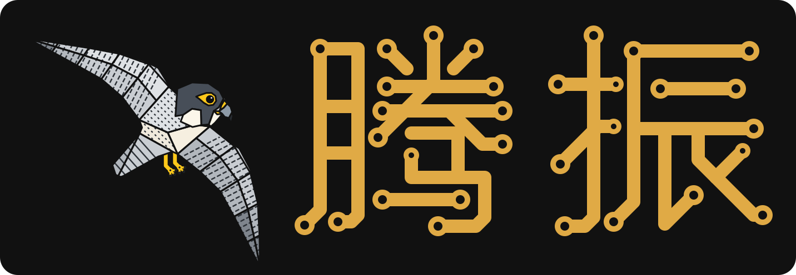

A bench you can set up anywhere, stocked from the world's electronics surplus.
An attempt to build the whole bench — scope, signal generator, supply and load — from generic parts, and to publish every step so others can follow.
U1
Instrument #1
A two-channel digitizer and signal generator in the Red Pitaya class.
- FPGA
- Colorlight i9 · Lattice ECP5 LFE5U-45F
- ADC
- 2× AD9226 modules · 12-bit · up to 65 MS/s
- SOC
- LiteX + VexRiscv · firmware in Rust
- AFE
- Custom analog front end · KiCad, fabricated at JLCPCB
- HOST
- Rust services: DuckDB ingest, SCPI, MCP
| RED PITAYA 125-14 | TENTZHEN #1 TARGET | |
|---|---|---|
| Channels in / out | 2 / 2 | 2 / 2, outputs in phase 5 |
| Sample rate | 125 MS/s | up to 65 MS/s |
| Resolution | 14-bit | 12-bit |
| Bandwidth | DC–60 MHz | 20–30 MHz usable |
unknownEvery Tentzhen figure is a target until it is measured.